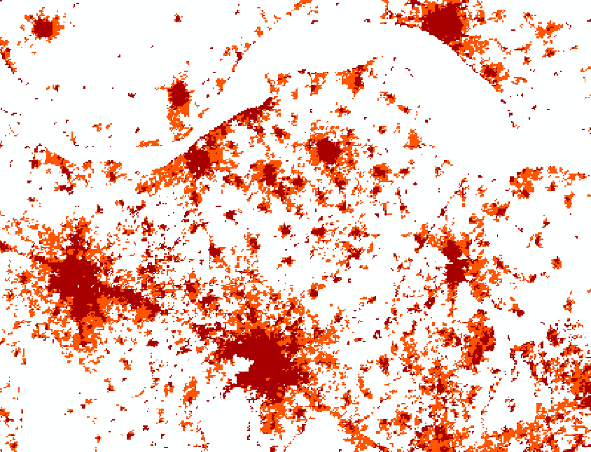
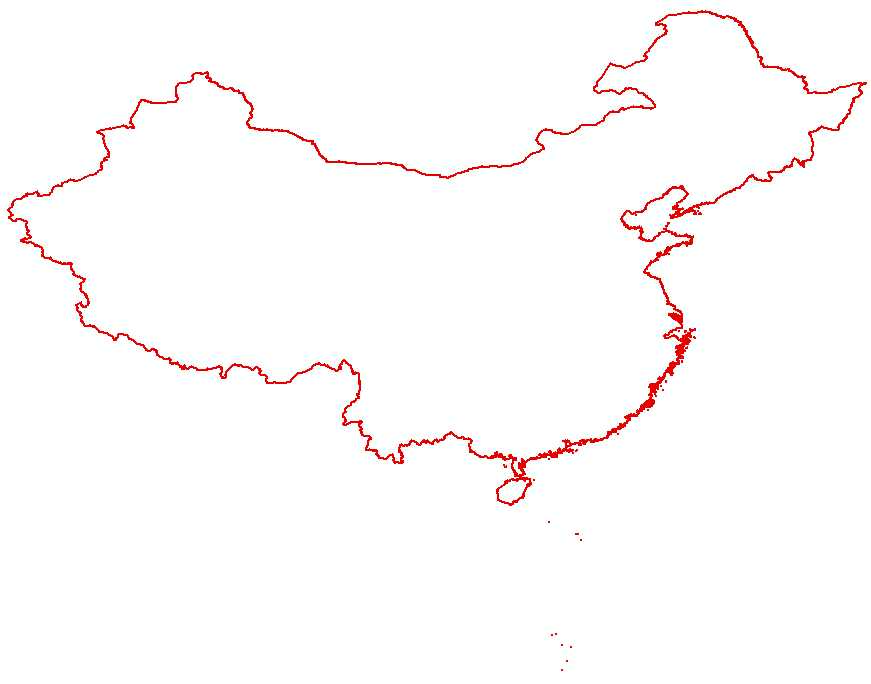
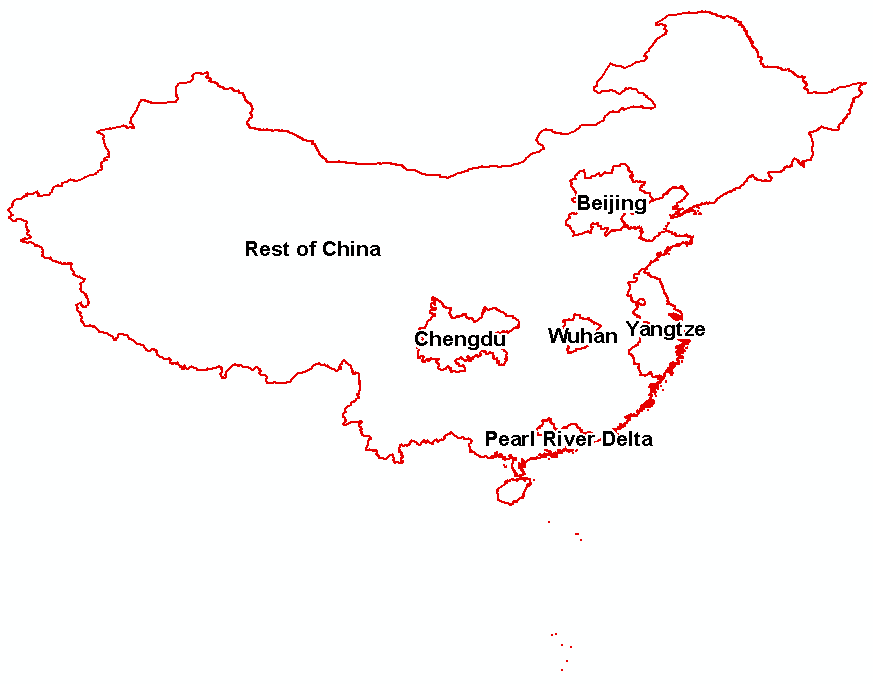
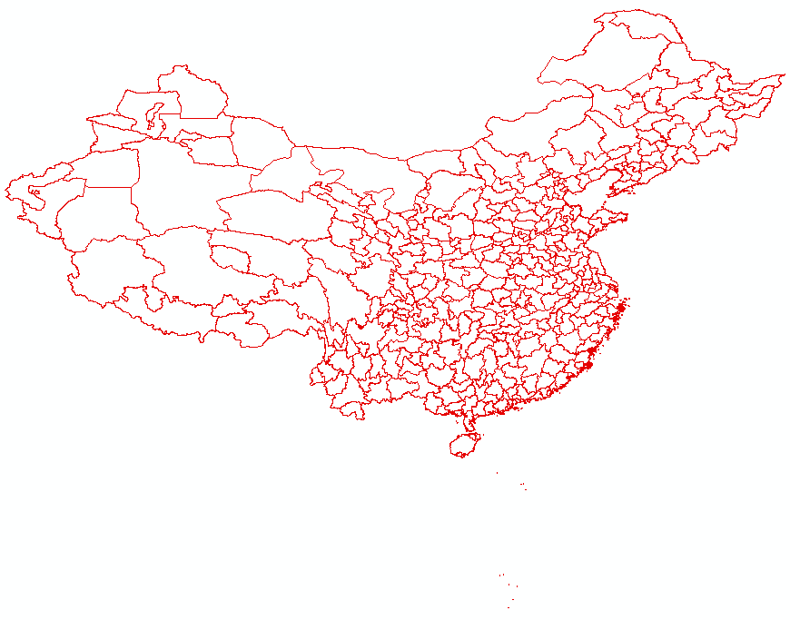
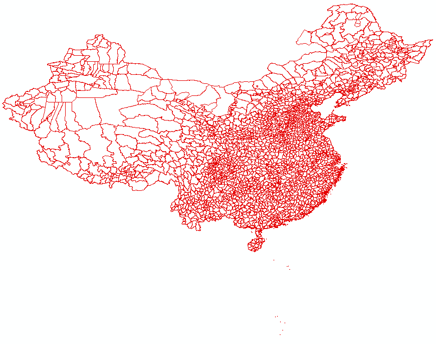

National scope - Urban Expansion in China 2000-2010
As a source for demonstration of analysis on national scope, China urban expansion data provided by Annemarie Schneider from University of Wisconsin-Madison have been used. These data origins from two different raster datasets with pixel size 250m, representing results of urban and other land cover classifications of satellite data, namely:
Values from these original datasets have been provided already aggregated for Chinese counties (small administrative units). Attributes from this dataset used for analysis on national level are listed in following table.
urb00_km2 |
Total urban land circa 2000 (sq km) |
urb10_km2 |
Total urban land circa 2010 (sq km) |
urbchg_km2 |
Urban expansion 2000-2010 (sq km) |
conv_for |
Est. expansion onto forested land 2000-2010 (sq km) |
conv_arabl |
Est. expansion onto arable land 2000-2010 (sq km) |
conv_shrub |
Est. expansion onto shrub/grass/barren land 2000-2010 (sq km) |
conv_water |
Est. water reclamation/expansion onto water 2000-2010 (sq km) |

UW-Madison urban expansion data- urban expansion 2000-2010 raster
These land cover data have been supplemented by population data coming from China county population census 2010 (incorporating also population number for year 2000 and population change values).
These data, provided for county units, have been aggregated for three other hierarchical levels of analytical units. Under the level 1 (whole country), data have been aggregated for five megapolis regions: Being, Chengdu, Wuhan, Yantze and Pearl River Delta. Values for all other Chinese counties have been aggregated together at this level, to enable comparison of values for these five megapolis regions with the rest of the country. Between this megapolis regions level and original county units, another hierarchical level (cities) have been added.

 
Created with the Personal Edition of HelpNDoc: Create iPhone web-based documentation